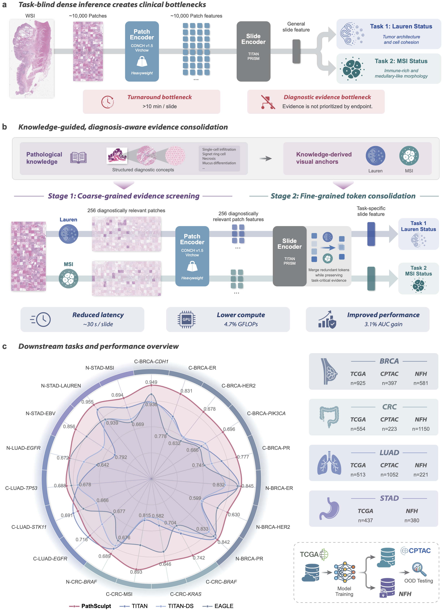

B.Sc. of School of Data Science
Fudan University | 2023 - Present
I am the year 4 undergraduate student of Fudan University, School of Data Science. I am currently interested in multimodel learning, image and video generation, and medical image analysis.
Fudan University | 2023 - Present
University of Hong Kong | 2024 Fall
Selected research projects and manuscripts.


Third Grade Scholarship of Fudan University
Third Grade Scholarship of Fudan University
Outside research, I enjoy basketball and football, and I am a fan of fantasy, science fiction, and comedy. Some of my favorites include Middle-earth Series, Doctor Who, The Big Bang Theory Series, The Three-Body Problem, etc.. I also a gaming fan across PC, PlayStation, and Nintendo Switch.